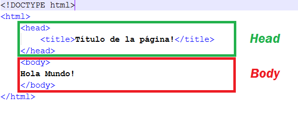

El lenguaje html (hypertext markup language) se utiliza para el desarrollo y creación de páginas web.
Se compone de una serie de etiquetas que el navegador interpreta. Entre las etiquetas que se incluyen dentro del lenguaje HTML
se encuentran: hipervínculos, etiquetas para imágenes, saltos de página, entre otras.

Etiquetas Generales:
Todo archivo html se inicia con la etiqueta !DOCTYPE html
para indicar al navegador que se trata de un archivo html5.
La etiqueta head sirve para nombrar el encabezado de la pagina
y añanir datos relevantes, y etiquetas meta de enlace de la pagina web.
La etiqueta title se ubica dentro del elemento head y pone nombre a la pagina web. El elemento title provee
un título o nombre para el documento. Este título debe proporcionar una corta pero precisa descripción del contenido del documento o su propósito
aún cuando es sacada de contexto (como, por ejemplo, cuando se muestra en los resultados de una búsqueda).
La etiqueta body tiene como funcion almacenar
todos los datos visibles para el usuario dentro de la pagina web.
El elemento body es el contenedor para todos los aspectos representables de un documento.
Este es el lugar donde los autores arrojan todos los elementos y contenidos que sus visitantes alcanzarán.
El elemento body es parte de la estructura básica de un documento.
La etiqueta h1-h6 son para marcar encabezados,
entre mayor sea la numeracion menor es la imporatancia del mismo,
se recomienda darle estilo con CSS. Los elementos de encabezado implementan seis niveles de encabezado del documento,
h1 es el más importante, y h6, el menos importante. Un elemento de encabezado describe brevemente el tema de la sección que presenta.
La etiqueta p crea un parrafo en el cual se contiene informacion en forma de contenido.
El elemento p (párrafo) es el apropiado para distribuir el texto en párrafos. Sus etiquetas son: p y p (la de cierre es opcional).
Crea una caja: en bloque.
Etiquetas de cuerpo interno:
La etiqueta a tiene como funcion crear un enlace a una url deseada, el atributo href
es el sitio en donde se coloca la url a la cual se va a enlazar, el mismo se le puede otorgar
a un parrafo en especifico, con el atributo target=_blank el enlace se abrira
en una nueva ventana.
El elemento de HTML Header (<header>)
representa un grupo de ayudas introductorias o de navegación. Puede contener algunos elementos de encabezado,
así como también un logo, un formulario de búsqueda, un nombre de autor y otros componentes.
El Elemento HTML Footer (<footer>) representa un pie de página para el contenido de sección más cercano o el elemento raíz de sección
(p.e, su ancestro mas cercano <article>,<aside>,<nav>,<section>,<blockquote>,<body>,<details>,<fieldset>,<figure>,<td>).
Un pie de página típicamente contiene información acerca de el autor
de la sección, datos de derechos de autor o enlaces a documentos relacionados.
El Elemento article de HTML (<article>) representa una composición auto-contenida en un documento, página, una aplicación o en el sitio,
que se destina a distribuir de forma independiente o reutilizable, por ejemplo, en la indicación. Podría ser un mensaje en un foro, un artículo de una revista o un
periódico, una entrada de blog, un comentario de un usuario, un widget interactivo o gadget, o cualquier otro elemento independiente del contenido.
El elemento de HTML section(<section>) representa una sección genérica de un documento. Sirve para determinar qué contenido corresponde a qué
parte de un esquema. Piensa en el esquema como en el índice de contenido de un libro; un tema común y subsecciones relacionadas. Es, por lo tanto, una etiqueta semántica.
Su funcionalidad principal es estructurar semánticamente un documento a la hora de ser representado por parte de un agente usuario. Por ejemplo, un agente de
usuario que represente el documento en voz, podría exponer al usuario el índice de contenido por niveles para navegar rápidamente por las distintas partes.
div (<div>) de "division" -división . Sirve para crear secciones o agrupar contenidos.
span (<span>) - abarcar. Es un contenedor en línea. Sirve para aplicar estilo al texto o agrupar elementos en línea.
El elemento de imagen HTML (<img src=>) representa una imagen en el documento.
El elemento HTML aside (<aside>) representa una sección de una página que consiste en contenido que está indirectamente relacionado con el contenido principal del documento.
Estas secciones son a menudo representadas como barras laterales o como inserciones y contienen una explicación al margen como una definición de glosario,
elementos relacionados indirectamente, como publicidad, la biografía del autor, o en aplicaciones web, la información de perfil o enlaces a blogs relacionados.
El elemento audio (<audio>) se usa para insertar contenido de audio en un documento HTML o XHTML.
El elemento HTML canvas (<canvas>) se puede utilizar para dibujar gráficos a través de secuencias de comandos (por lo general JavaScript). Por ejemplo, puede usarse para
dibujar gráficos, hacer composiciones de fotos o incluso realizar animaciones.
El elemento HTML <datalist> contiene un conjunto de elementos <option> que representan los valores disponibles para otros controles.
El elemento HTML <details> es usado como un widget de revelación a través del cual el usuario puede obtener información adicional.
El elemento HTML <nav> representa una sección de una página cuyo propósito es proporcionar enlaces de navegación, ya sea dentro del documento actual o a otros documentos.
Ejemplos comunes de secciones de navegación son menús, tablas de contenido e índices.
El elemento HTML <output> es un elemento contenedor en el que un sitio o aplicación puede inyectar los resultados de un cálculo o el resultado de una acción del usuario.
El elemento <video> se utiliza para incrustar vídeos en un documento HTML o XHTML.
La etiqueta HTML <progress> se utiliza para visualizar el progreso de una tarea. Aunque los detalles de como se muestran depende directamente del navegador que utiliza el
cliente, aunque básicamente aparece una barra de progreso.